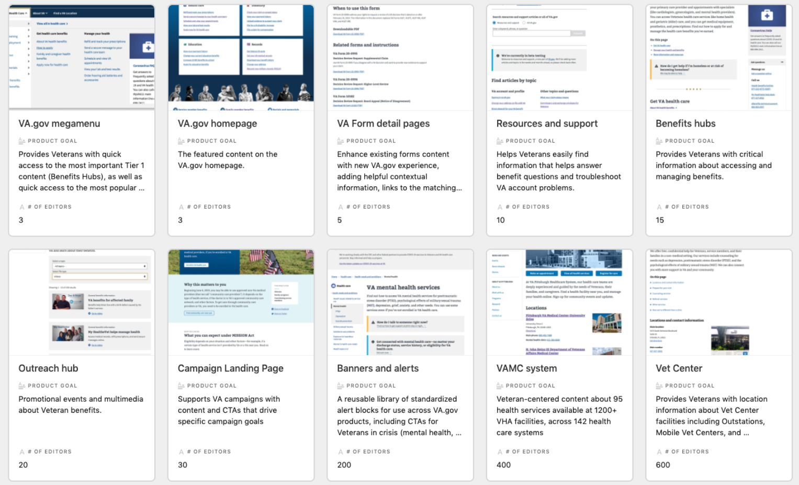

How a product-oriented approach to content management helps VA get the right info to Veterans

The Department of Veterans Affairs (VA), which provides benefits to over 20 million Veterans, is in a multi-year process to build a modern online experience across its many websites and services. One key piece of this puzzle is making sure information is consistent and accurate for Veterans, no matter what part of the VA they are looking at online.
Together with partner digital service firms AgileSix and Friends From the City, we at CivicActions are working “behind the scenes” to achieve this goal via a decoupled Drupal content management system (CMS), which houses and organizes the content of thousands of pages on VA.gov.
At Drupal GovCon 2021, Kevin Walsh and Rachel Kauff of CivicActions shared about the “product focused” approach VA is taking to delivering consistent information and services — and how we are building that approach into Drupal. We also support the VA content authors themselves, helping them manage their CMS effectively and write accessible content in plain language for Veterans.
Human-centered design is at the core of our work as we build out a Drupal application that empowers “editor-centered management of Veteran-centered content”.
“Design principles give us a shared language and help us meet the common goals of multiple teams who may have conflicting priorities.” — Rachel Kauff
Watch video
“We’re bringing hundreds of silo’d VA websites under one Drupal umbrella to improve consistency and reliability of information for Veterans.” — Kevin Walsh
Highlights
- 1:00 — What is a “product-oriented” Drupal project and why does it matter
- 4:50 — The danger of organizing a CMS around organizational structure
- 6:40 — Arrange your CMS in a product-oriented way to serve users better
- 9:00 — See the range of VA products supported by this effort (and wow, are they diverse)
- 12:57 — Identify attributes of your products to help decide how to setup your CMS
- 17:24 — “Contrib” and “core” analogy applied to VA CMS workstreams
- 18:47 — Learn about the design principles that guide our decisions
- 19:40 — Goal: “Editor-centered management of Veteran-centered content”
- 22:40 — Using GitHub issue templates to bake in design principles
- 23:30 — Examples of design principles applied to the editor experience
- 29:38 — Accommodating product-specific editorial needs in the CMS
- 35:02 — How we’re helping the VA staff who have limited CMS experience
- 37:35 — Building a product layer into the Drupal application
- 40:30 — Summary of key points
Resources
- Deck: One Drupal platform, multiple government products
- See the work in action: www.va.gov
- GitHub repo
Connect with Kevin
Connect with Rachel